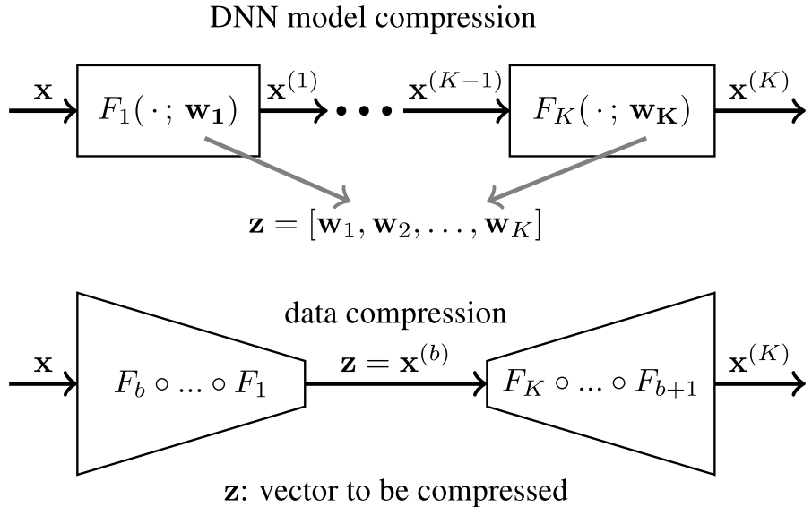

Soft-to-Hard Vector Quantization for End-to-End Learning Compressible Representations¶
- Two major challenges arise when minimizing \(D + \beta R\) for DNNs:
coping with the non-differentiability (due to quantization operations) of the cost function \(D + \beta R\)
obtaining an accurate and differentiable estimate of the entropy \(R\)
In this paper, the authors propose a unified end-to-end learning framework for learning compressible representations, jointly optimizing the model parameters, the quantization levels, and the entropy of the resulting symbol stream to compress either a subset of feature representations in the network or the model itself.
Experiments show that this soft-to-hard quantization approach gives results competitive with the SOTA for image compression and neural network compression.
{kind=link}
Problem Formulation¶
The loss of a standard DNN can be decomposed as the sample loss plus a regularization term
We say that the deep architecture is an autoencoder when the network maps back into the input space, with the goal of reproducing the input. Autoencoders typically condense the dimensionality of the input into some smaller dimensionality insider the network, i.e., the layer with the smallest output dimension, \(\mathbf{x}^{(b)} \in \mathbb{R}^{d_b}\), has \(d_b \ll d_1\), which we refer to as the "bottleneck".
We say that a weight parameter \(\mathbf{w}_i\) or a feature \(\mathbf{x}^{(i)}\) has a compressible representation if it can be serialized to a binary stream using few bits. We map \(\mathbf{z}\) to a sequence of \(m\) symbols using a (symbol) encoder \(E: \mathbb{R}^d \mapsto [L]^m\). The reconstruction of \(\mathbf{z}\) is then produced by a (symbol) decoder \(D: [L]^m \mapsto \mathbb{R}^d\), which maps the symbol back to \(\hat{\mathbf{z}} = D(E(\mathbf{z})) \in \mathbb{R}^d\).
According to Shannon's source coding theorem, the correct metric for compressibility is the entropy of \(E(Z)\):
The generic goal is hence to optimize the rate-distortion trade-off between the expected loss and the entropy of \(E(Z)\):